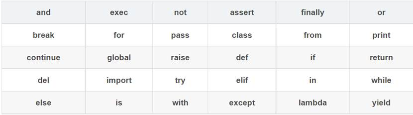
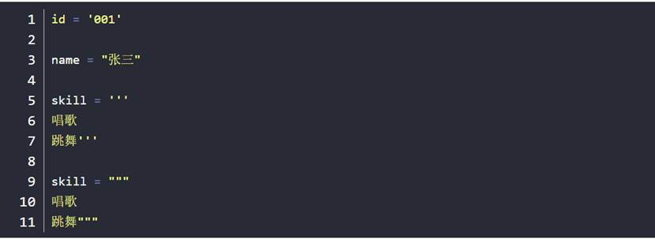
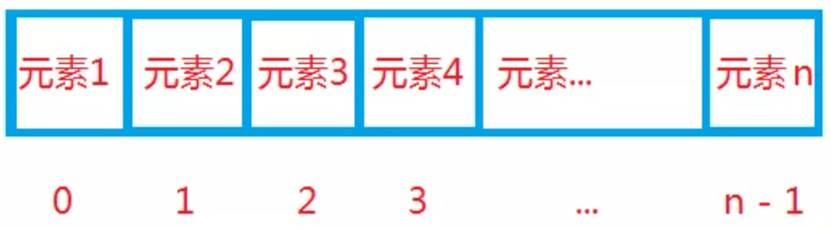
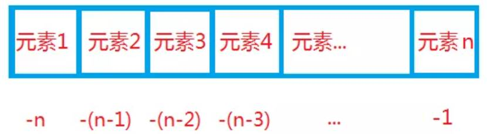
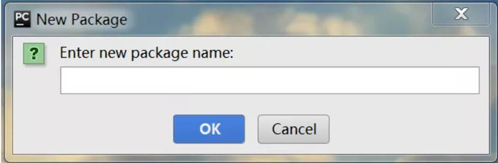
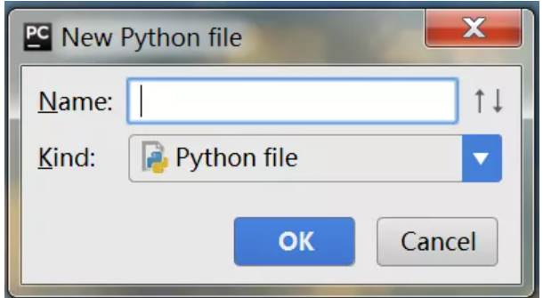
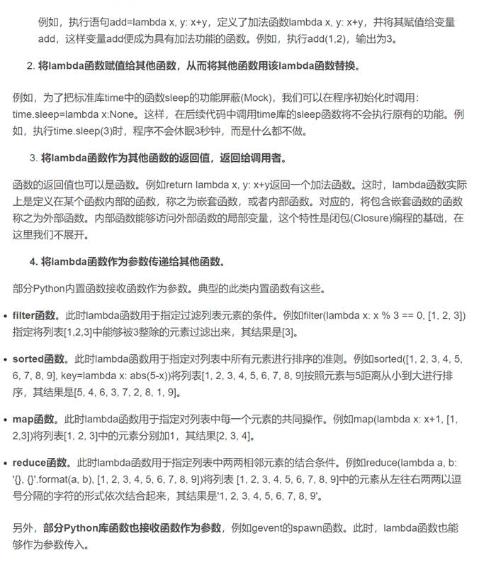
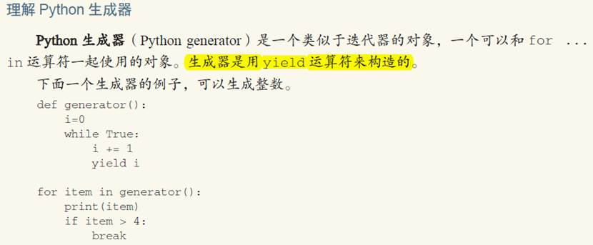
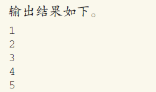

python基础¶
入门必备知识¶
1 标识符¶
标识符是编程时使用的名字，用于给变量、函数、语句块等命名，Python 中标识符由字母、数字、下划线组成，不能以数字开头，区分大小写。
以下划线开头的标识符有特殊含义，单下划线开头的标识符，如：xxx ，表示不能直接访问的类属性，需通过类提供的接口进行访问，不能用 from xxx import * 导入；双下划线开头的标识符，如：__xx，表示私有成员；双下划线开头和结尾的标识符，如：__xx_，表示 Python 中内置标识，如：init() 表示类的构造函数。
2 关键字¶
上面表中是 Python 中的关键字（保留字），我们在自定义标识符时不能使用关键字。
3 引号¶
Python 可以使用引号（'）、双引号（"）、三引号（''' 或 """）来表示字符串，引号的开始与结束须类型相同，三引号可以由多行组成。如下所示：

4 编码¶
Python2 中默认编码为 ASCII，假如内容为汉字，不指定编码便不能正确的输出及读取，比如我们想要指定编码为 UTF-8，Python 中通过在开头加入 # -- coding: UTF-8 -- 进行指定。
Python3 中默认编码为 UTF-8，因此在使用 Python3 时，我们通常不需指定编码。
5 输入输出¶
Python 输出使用 print()，内容加在括号中即可。如下所示：
print('Hello Python')
Python 提供了一个 input()，可以让用户输入字符串，并存放到一个变量里。如下所示：
name = input()
print('Hi',name)
6 缩进¶
Python 不使用 {} 来控制类、函数、逻辑判断等，而是使用缩进，缩进的空格可变。如下所示：
if True:
print(True)
else:
print(False)
7 多行¶
Python 中一般以新行作为语句的结束标识，可以使用 将一行语句分为多行显示。如下所示：
a = 128
b = 1024
c = 512
d = a + \
b - \
c
如果包含在 []、{}、() 括号中，则不需要使用 \。如下所示：
arr = {
a,
b,
c
}
8 注释¶
Python 中单行注释使用 #，多行注释使用三个单引号（'''）或三个双引号（"""）。如下所示：
# 我是单行注释
'''
我是多行注释
我是多行注释
'''
"""
我是多行注释
我是多行注释
"""
9 数据类型¶
l 整数：可以为任意大小、包含负数
l 浮点数：就是小数
l 字符串：以单引号 '、双引号"、三引号 ''' 或 """括起来的文本
l 布尔：只有 True、False 两种值
l 空值：用 None 表示
l 变量：是可变的
l 常量：不可变
10 运算符¶
10.1 常用运算符¶
运算符 描述 示例
+ 相加 a + b
- 相减 a - b
* 相乘 a * b
/ 相除 a / b
% 取模 a % b
** 幂 a**b 表示 a 的 b 次幂
// 取整除 9 // 4 结果为 2
== 是否相等 a == b
!= 是否不等于 a != b
> 是否大于 a > b
>= 是否大于等于 a >= b
<= 是否小于等于 a <= b
= 简单的赋值运算符 a = b + c
+= 加法赋值运算符 a += b 等效于 a = a + b
-= 减法赋值运算符 a -= b 等效于 a = a - b
*= 乘法赋值运算符 a *= b 等效于 a = a * b
/= 除法赋值运算符 a /= b 等效于 a = a / b
%= 取模赋值运算符 a %= b 等效于 a = a % b
**= 幂赋值运算符 a **= b 等效于 a = a ** b
//= 取整除赋值运算符 a //= b 等效于 a = a // b
& 与 a & b
| 或 a | b
^ 异或 a ^ b
~ 取反 ~a
<< 左移动 a << 3
>> 右移动 a >> 3
and 布尔类型与 a and b
or 布尔类型或 a or b
not 布尔类型非 not a
is 判断两个标识符是否引用同一个对象 a is b
is not 判断两个标识符是否引用不同对象 a is not b
10.2 运算符优先级¶
运算符 描述（由上至下对应优先级由高到低）
** 幂运算
~ + - 取反、正号、负号
* / % // 乘、除、取模、取整除
+ - 加法、减法
>> << 右移、左移
& 与
^ | 异或、或
<= < > >= 比较运算符
== != 是否等于、是否不等于
= %= /= //= -= += = *= 赋值运算符
is is not 身份运算符
in not in 成员运算符
not and or 逻辑运算符
————————————————
版权声明：本文为CSDN博主「Python小二」的原创文章，遵循CC 4.0 BY-SA版权协议，转载请附上原文出处链接及本声明。
原文链接：https://blog.csdn.net/ityard/article/details/102807071
基本语句¶
1 条件语句¶
在进行逻辑判断时，我们需要用到条件语句，Python 提供了 if、elif、else 来进行逻辑判断。格式如下所示：
if 判断条件1:
执行语句1...
elif 判断条件2:
执行语句2...
elif 判断条件3:
执行语句3...
else:
执行语句4...
2 循环语句¶
当需要多次重复执行时，我们要用到循环语句，Python 提供了 for 循环和 while 循环。
2.1 for 循环¶
for 循环可以遍历任何序列，比如：字符串。如下所示：
str = 'Python'
for s in str:
print(s)
输出结果：
P
y
t
h
o
n
2.2 while 循环¶
while 循环，满足条件时进行循环，不满足条件时退出循环。如下所示：
sum = 0
m = 10
while m > 0:
sum = sum + m
m = m - 1
print(sum)
输出结果：
55
2.3 break¶
break 用在 for 循环和 while 循环语句中，用来终止整个循环。如下所示：
str = 'Python'
for s in str:
if s == 'o':
break
print(s)
输出结果：
P
y
t
h
2.4 continue¶
continue 用在 for 循环和 while 循环语句中，用来终止本次循环。如下所示：
str = 'Python'
for s in str:
if s == 'o':
continue
print(s)
输出结果：
P
y
t
h
n
3 pass 语句
pass 是空语句，它不做任何事情，一般用做占位语句，作用是保持程序结构的完整性。如下所示：
if True:
pass
我是一个数字¶
序言
Hello，我是 Python 数据类型数字，大家之前对我可能已经有所耳闻，俗话说闻名不如见面，见面要先自我介绍，为了让大家对我有一个清晰的了解，下面我要向大家介绍一下自己。
1 数值类型¶
我有三种数值类型，分别是：整型（int）、浮点型（float）、复数（complex），如果你使用的还是我的低版本 Python2，那么还包含长整型（long）。
- 整型：包括正整数、负整数。如：1024、-1024。整型有四种进制表示，分别为：二进制、八进制、十进制、十六进制，说明如下表所示：
| 种类 | 描述 | 引导符 |
|---|---|---|
| 二进制 | 由 0 和 1 组成 | 0b 或 0B |
| 八进制 | 由 0 到 7 组成 | 0o 或 0O |
| 十进制 | 默认情况 | 无 |
| 十六进制 | 由 0 到 9、a 到 f、A 到 F 组成，不区分大小写 | 0x 或 0X |
- 浮点型：由整数部分和小数部分组成。
- 复数：由实数部分和虚数部分组成。
2 基本运算¶
我的基本运算见下表，整型和浮点型均支持下表中运算。
| 运算 | 描述 |
|---|---|
| x + y | x 和 y 的和 |
| x - y | x 和 y 的差 |
| x * y | x 和 y 的乘积 |
| x / y | x 和 y 的商 |
| x // y | x 除以 y，取整除 |
| x % y | x 除以 y，取模 |
| -x | x 取反 |
| +x | x 不变 |
| abs(x) | x 的绝对值 |
| int(x) | 将 x 转换为整数 |
| float(x) | 将 x 转换为浮点数 |
| complex(x, y) | 一个带有实部 x 和虚部 y 的复数，y 默认为 0。 |
| divmod(x, y) | (x // y, x % y) |
| pow(x, y) | x 的 y 次幂 |
| x ** y | x 的 y 次幂 |
3 数学函数¶
除了上面的基本运算外，我还可以借助数学模块 math 实现更多的运算。
首先要先引入数学模块 math。如下所示：
- import math
引入之后就可以使用了，以 math 模块中求平方根函数 sqrt(x) 为例。使用方式如下所示：
- import math
· math.sqrt(1024)
math 模块中除了求平方根函数，还有很多可以使用的函数。如下表所示：
| 函数 | 描述 |
|---|---|
| abs(x) | 返回 x 的绝对值 |
| ceil(x) | 返回 x 的上入整数，如：math.ceil(1.1) 返回 2 |
| floor(x) | 返回 x 的下舍整数，如：math.floor(1.1) 返回 1 |
| exp(x) | 返回 e 的 x 次幂 |
| log(x) | 返回以 e 为底 x 的对数 |
| log10(x) | 返回以 10 为底 x 的对数 |
| pow(x, y) | 返回 x 的 y 次幂 |
| sqrt(x) | 返回 x 的平方根 |
| factorial(x) | 返回 x 的阶乘 |
4 随机函数¶
在安全领域有时会用到随机数，random 模块对随机数的生成提供了支持。
首先还是要引入 random 模块。如下所示：
import random
下面简单介绍两个函数：
random(x)****函数
随机生成一个 0 到 1 范围内的实数。使用如下所示：
import random
random.random()
uniform(x, y)****函数
随机生成一个 x 到 y 范围内的实数。使用如下所示：
import random
random.uniform(1,10)
注:
- 文中的我、自己代指 Python 数据类型数字。
- 本文使用 Python3。
序列¶
1 简介¶
Python 中的序列是一块可存放多个值的连续内存空间，所有值按一定顺序排列，每个值所在位置都有一个编号，称其为索引，我们可以通过索引访问其对应值。
我们上一节说的Python 基础（四）：字符串就是序列结构，除此之外常见的序列结构还包括列表、元组等。
2 基本使用¶
2.1 索引¶
序列索引支持非负数和负数，索引为非负数，从 0 开始，如下所示：

索引为负数由右向左计数，从 -1 开始，如图所示：

下面通过一个示例作进一步了解，以字符串为例，如下所示：
str = 'Python'
print('str[0] str[-6] =', str[0], str[-6])
print('str[5] str[-1] =', str[5], str[-1])
输出结果：
str[0] str[-6] = P Pstr[5] str[-1] = n n
从结果来看，我们使用非负数索引与负数索引得到的结果一致。
2.2 切片¶
切片操作可以访问一定范围内的元素，语法如下所示：
sname[start : end : step]
- sname：表示序列的名称；
- start：开始索引位置（包括该位置），默认为 0；
- end：表示切片的结束索引位置（不包括该位置），默认为序列的长度；
- step：步长。
以字符串为例，如下所示：
str = 'Python'
print(str[:3])
print(str[3:])
print(str[:])
输出结果：
Pyt
hon
Python
2.3 相加¶
Python 支持类型相同的序列使用 + 作相加操作，该操作不会去除重复的元素。以字符串为例，如下所示：
- str1 = 'Python'str2 = 'Python'
- print('str1 + str2 → ',str1 + str2)
输出结果：
- str1 + str2 → PythonPython
2.4 相乘¶
Python 中，使用数字 n 乘以一个序列会生成新的序列，内容为原来序列被重复 n 次的结果。以字符串为例，如下所示：
- str = 'Python'
- print('2 * str → ',2 * str)
输出结果：
- 2 * str → PythonPython
2.5 元素是否在序列中¶
Python 使用 in 关键字检查某元素是否为序列的成员，语法如下：
val in seq
- val：要检查的元素；
- seq：指定的序列。
通过一个例子作进一步了解，以字符串为例，如下所示：
- str = 'Python'
- print('on'in str)
输出结果：
- True
2.6 内置函数¶
| 函数 | 描述 |
|---|---|
| len() | 计算序列的长度 |
| max() | 找出序列中的最大元素 |
| min() | 找出序列中的最小元素 |
| list() | 将序列转换为列表 |
| str() | 将序列转换为字符串 |
| sum() | 计算元素的和 |
| sorted() | 对元素进行排序 |
| enumerate() | 将序列组合为一个索引序列，多用在 for 循环中 |
简单举几个例子，如下所示：
- str = 'dbcae'
- print('len →', len(str))
- print('max →', max(str))
- print('sorted →', sorted(str))
输出结果：
- len → 5
- max → e
- sorted → ['a', 'b', 'c', 'd', 'e']
列表与元祖¶
1列表¶
1.1 简介¶
Python 中没有数组，而是加入了功能更强大的列表（list），列表可以存储任何类型的数据，同一个列表中的数据类型还可以不同；列表是序列结构，可以进行序列结构的基本操作：索引、切片、加、乘、检查成员。
1.2 基本使用¶
➢ 创建¶
列表中所有元素都放在一个中括号 [] 中，相邻元素之间用逗号 , 分隔，如下所示：
- l = [1024, 0.5, 'Python']
➢ 访问¶
通过索引访问列表中的值，还可以使用 : 截取范围内的元素，如下所示：
- l = [1024, 0.5, 'Python']
- print('l[0] →', l[0])
- print('l[1:] →', l[1:])
输出结果：
- l[0] → 1024
- l[1:] → [0.5, 'Python']
➢ 更新¶
除了对列表中现有元素进行修改外，还可以使用 append() 向列表中添加新元素，如下所示：
l = [1024, 0.5, 'Python']
# 修改列表中第二个元素
l[1] = 5
# 向列表中添加新元素
l.append('Hello')print('l[1] →', l[1])
print('l →', l)
输出结果：
l[1] → 5
l → [1024, 5, 'Python', 'Hello']
➢ 删除¶
使用 del 删除列表中元素，如下所示：
- l = [1024, 0.5, 'Python']
- # 删除列表中第二个元素
- del l[1]
- print('l →', l)
输出结果：
- l → [1024, 'Python']
➢ 常用方法¶
① count()¶
统计列表中某个元素出现的次数，使用如下所示：
- l = ['d', 'b', 'a', 'f', 'd']
- print("l.count('d') →", l.count('d'))
输出结果：
l.count('d') → 2
② index()¶
查找某个元素在列表中首次出现的位置（即索引），使用如下所示：
- l = ['d', 'b', 'a', 'f', 'd']
- print("l.index('d') →", l.index('d'))
输出结果：
- l.index('d') → 0
③ remove()¶
移除列表中某个值的首次匹配项，使用如下所示：
- l = ['d', 'b', 'a', 'f', 'd']
- l.remove('d')
- print("l →", l)
输出结果：
- l → ['b', 'a', 'f', 'd']
④ sort()¶
对列表中元素进行排序，使用如下所示：
l = ['d', 'b', 'a', 'f', 'd']
l.sort()
print('l →', l)
输出结果：
- l → ['a', 'b', 'd', 'd', 'f']
⑤ copy()¶
复制列表，使用如下所示：
- l = ['d', 'b', 'a', 'f', 'd']
- lc = l.copy()
- print('lc →', lc)
输出结果：
- lc → ['d', 'b', 'a', 'f', 'd']
2 元组¶
2.1 简介¶
元组（tuple）与列表类似，但元组是不可变的，可简单将其看作是不可变的列表，元组常用于保存不可修改的内容。
2.2 基本使用¶
➢ 创建¶
元组中所有元素都放在一个小括号 () 中，相邻元素之间用逗号 , 分隔，如下所示：
t = (1024, 0.5, 'Python')
➢ 访问¶
与访问列表中元素类似，如下所示：
t = (1024, 0.5, 'Python')
print('t[0] →', t[0])
print('t[1:] →', t[1:])
输出结果：
t[0] → 1024
t[1:] → (0.5, 'Python')
➢ 修改¶
元组中元素不能被修改，我们要用重新赋值的方式操作，如下所示：
t = (1024, 0.5, 'Python')
t = (1024, 0.5, 'Python', 'Hello')
print('t →', t)
输出结果：
t → (1024, 0.5, 'Python', 'Hello')
➢ 删除¶
元组中的元素不能被删除，我们只能删除整个元组，如下所示：
t = (1024, 0.5, 'Python')del tprint('t →', t)
输出结果：
NameError: name 't' is not defined
由于元组实例被删除，所以输出了异常信息。
➢ 常用方法¶
① len()¶
计算元组中元素个数，使用如下所示：
t = (1024, 0.5, 'Python')
print('len(t) →', len(t))
输出结果：
len(t) → 3
② max() 和 min()¶
返回元组中元素最大、最小值，使用如下所示：
t = ('d', 'b', 'a', 'f', 'd')
print('max(t) →', max(t))
print('min(t) →', min(t))
输出结果：
max(t) → f
min(t) → a
③ tuple()¶
将列表转换为元组，使用如下所示：
l = ['d', 'b', 'a', 'f', 'd']
t = tuple(l)
print('t →', t)
输出结果：
t → ('d', 'b', 'a', 'f', 'd')
字典与集合¶
1 字典¶
当看到字典这个词时，有些人包括我自己在内，首先映入眼帘的便是新华字典
我清楚的记得，刚上小学时老师就让每一个学生准备一本新华字典，它的使用大家也应该都清楚，通过拼音、偏旁部首等进行查询；今天我们说的字典（dict）是 Python 的数据结构，因为都叫字典，我们不用想也知道它们是十分相似的，它们的内容都是以键-值（key-value）的方式存在的。
dict 拥有良好的查询速度，dict 中的值可以是任意 Python 对象，多次对一个 key 赋 value，后面的 value 会把前面的 value 覆盖。
1.2 使用¶
字典的内容在花括号 {} 内，键-值（key-value）之间用冒号 : 分隔，键值对之间用逗号 , 分隔，比如创建字典 d，如下所示：
d = {'name':'小明', 'age':'18'}
# 使用 dict 函数
# 方式一
l = [('name', '小明'), ('age', 18)]
d = dict(l)
# 方式二
d = dict(name='小明', age='18') # 空字典
d = dict()
d = {}
字典中的值通过 key 进行访问，如下所示：
>>> d = dict(name='小明', age='18')
>>> d['name']'小明' # 使用 get 方法
>>> d.get('name')
'小明'
修改操作，以修改 age 为例，如下所示：
>>> d = dict(name='小明', age='18')
>>> d['age'] = '20'
>>> d['age']
'20'
清空集合，如下所示：
>>> d = dict(name='小明', age='18')
>>> d.clear()
>>> d
{}
获取字典的长度，如下所示：
>>> d = dict(name='小明', age='18')
>>> len(d)
2
2 集合¶
2.1 简介
集合（set）与字典相同均存储 key，但也只存储 key，因 key 不可重复，所以 set 的中的值不可重复，也是无序的。
2.2 使用¶
集合使用花括号 {} 或者 set() 函数创建，如果创建空集合只能使用 set() 函数，以创建集合 s 为例，如下所示：
s = {'a', 'b', 'c'} # 使用 set 函数
s = set(['a', 'b', 'c']) # 空集合
s = set()
集合中重复的元素会被自动过滤掉，如下所示：
>>> s = {'a', 'a', 'b', 'c', 'c'}
>>> s{'a', 'c', 'b'}
添加元素可以使用 add 或 update 方法，如果元素已经存在，则不进行操作，如下所示：
>>> s = {'a', 'b', 'c'}
>>> s.add('d')
>>> s{'a', 'd', 'c', 'b'}
>>> s.update('e')
>>> s{'a', 'b', 'e', 'd', 'c'
}
# 添加已经存在的元素
a>>> s.add('a')
>>> s{'a', 'b', 'e', 'd', 'c'}
删除元素使用 remove 方法，如下所示：
>>> s = {'a', 'b', 'c'}
>>> s.remove('c')
>>> s{'a', 'b'}
清空集合使用 clear 方法，如下所示：
>>> s = {'a', 'b', 'c'}
>>> s.clear()
>>> sset()
获取集合的长度，同样使用 len 方法，如下所示：
>>> s = {'a', 'b', 'c'}
>>> len(s)
3
与时间相关的模块¶
1 time 模块¶
time 模块提供了很多与时间相关的类和函数，下面我们介绍一些常用的。
1.1 struct_time 类¶
time 模块的 struct_time 类代表一个时间对象，可以通过索引和属性名访问值。对应关系如下所示：
| 索引 | 属性 | 值 |
|---|---|---|
| 0 | tm_year（年） | 如：1945 |
| 1 | tm_mon（月） | 1 ~ 12 |
| 2 | tm_mday（日） | 1 ~ 31 |
| 3 | tm_hour（时） | 0 ~ 23 |
| 4 | tm_min（分） | 0 ~ 59 |
| 5 | tm_sec（秒） | 0 ~ 61 |
| 6 | tm_wday（周） | 0 ~ 6 |
| 7 | tm_yday（一年内第几天） | 1 ~ 366 |
| 8 | tm_isdst（夏时令） | -1、0、1 |
tm_sec 范围为 0 ~ 61，值 60 表示在闰秒的时间戳中有效，并且由于历史原因支持值 61。
localtime() 表示当前时间，返回类型为 struct_time 对象，示例如下所示：
import time
t = time.localtime()
print('t→', t)
print('tm_year→', t.tm_year)
print('tm_year→', t[0])
输出结果：
t→ time.struct_time(tm_year=2019, tm_mon=12, tm_mday=1, tm_hour=19, tm_min=49, tm_sec=54, tm_wday=6, tm_yday=335, tm_isdst=0)
tm_year→ 2019
tm_year→ 2019
1.2 常用函数¶
| 函数（常量） | 说明 |
|---|---|
| time() | 返回当前时间的时间戳 |
| gmtime([secs]) | 将时间戳转换为格林威治天文时间下的 struct_time，可选参数 secs 表示从 epoch 到现在的秒数，默认为当前时间 |
| localtime([secs]) | 与 gmtime() 相似，返回当地时间下的 struct_time |
| mktime(t) | localtime() 的反函数 |
| asctime([t]) | 接收一个 struct_time 表示的时间，返回形式为：Mon Dec 2 08:53:47 2019 的字符串 |
| ctime([secs]) | ctime(secs) 相当于 asctime(localtime(secs)) |
| strftime(format[, t]) | 格式化日期，接收一个 struct_time 表示的时间，并返回以可读字符串表示的当地时间 |
| sleep(secs) | 暂停执行调用线程指定的秒数 |
| altzone | 本地 DST 时区的偏移量，以 UTC 为单位的秒数 |
| timezone | 本地（非 DST）时区的偏移量，UTC 以西的秒数（西欧大部分地区为负，美国为正，英国为零） |
| tzname | 两个字符串的元组：第一个是本地非 DST 时区的名称，第二个是本地 DST 时区的名称 |
epoch：1970-01-01 00:00:00 UTC
基本使用如下所示：
import time print(time.time())
print(time.gmtime())
print(time.localtime())
print(time.asctime(time.localtime()))
print(time.tzname)
# strftime 使用
print(time.strftime('%Y-%m-%d %H:%M:%S', time.localtime()))
strftime 函数日期格式化符号说明如下所示：
| 符号 | 说明 |
|---|---|
| %a | 本地化的缩写星期中每日的名称 |
| %A | 本地化的星期中每日的完整名称 |
| %b | 本地化的月缩写名称 |
| %B | 本地化的月完整名称 |
| %c | 本地化的适当日期和时间表示 |
| %d | 十进制数 [01,31] 表示的月中日 |
| %H | 十进制数 [00,23] 表示的小时（24小时制） |
| %I | 十进制数 [01,12] 表示的小时（12小时制） |
| %j | 十进制数 [001,366] 表示的年中日 |
| %m | 十进制数 [01,12] 表示的月 |
| %M | 十进制数 [00,59] 表示的分钟 |
| %p | 本地化的 AM 或 PM |
| %S | 十进制数 [00,61] 表示的秒 |
| %U | 十进制数 [00,53] 表示的一年中的周数（星期日作为一周的第一天） |
| %w | 十进制数 [0(星期日),6] 表示的周中日 |
| %W | 十进制数 [00,53] 表示的一年中的周数（星期一作为一周的第一天） |
| %x | 本地化的适当日期表示 |
| %X | 本地化的适当时间表示 |
| %y | 十进制数 [00,99] 表示的没有世纪的年份 |
| %Y | 十进制数表示的带世纪的年份 |
| %z | 时区偏移以格式 +HHMM 或 -HHMM 形式的 UTC/GMT 的正或负时差指示，其中 H 表示十进制小时数字，M 表示小数分钟数字 [-23:59, +23:59] |
| %Z | 时区名称 |
| %% | 字面的 '%' 字符 |
2 datetime 模块¶
datatime 模块重新封装了 time 模块，提供了更多接口，变得更加直观和易于调用。
2.1 date 类¶
date 类表示一个由年、月、日组成的日期，格式为：datetime.date(year, month, day)。
- year 范围为：[1, 9999]
- month 范围为：[1, 12]
- day 范围为 [1, 给定年月对应的天数]。
类方法和属性如下所示：
| 方法（属性） | 说明 |
|---|---|
| today() | 返回当地的当前日期 |
| fromtimestamp(timestamp) | 根据给定的时间戮，返回本地日期 |
| min | date 所能表示的最小日期 |
| max | date 所能表示的最大日期 |
使用示例如下所示：
import datetime
import time print(datetime.date.today())
print(datetime.date.fromtimestamp(time.time()))
print(datetime.date.min)
print(datetime.date.max)
实例方法和属性如下所示：
| 方法（属性） | 说明 |
|---|---|
| replace(year, month, day) | 生成一个新的日期对象，用参数指定的年，月，日代替原有对象中的属性 |
| timetuple() | 返回日期对应的 struct_time 对象 |
| weekday() | 返回一个整数代表星期几，星期一为 0，星期天为 6 |
| isoweekday() | 返回一个整数代表星期几，星期一为 1，星期天为 7 |
| isocalendar() | 返回格式为 (year，month，day) 的元组 |
| isoformat() | 返回格式如 YYYY-MM-DD 的字符串 |
| strftime(format) | 返回自定义格式的字符串 |
| year | 年 |
| month | 月 |
| day | 日 |
使用示例如下所示：
import datetime td = datetime.date.today()
print(td.replace(year=1945, month=8, day=15))
print(td.timetuple())
print(td.weekday())
print(td.isoweekday())
print(td.isocalendar())
print(td.isoformat())
print(td.strftime('%Y %m %d %H:%M:%S %f'))
print(td.year)
print(td.month)
print(td.day)
2.2 time 类¶
time 类表示由时、分、秒、微秒组成的时间，格式为：time(hour=0, minute=0, second=0, microsecond=0, tzinfo=None, *, fold=0)。
- hour 范围为：[0, 24)
- minute 范围为：[0, 60)
- second 范围为：[0, 60)
- microsecond 范围为：[0, 1000000)
- fold 范围为：[0, 1]
实例方法和属性如下所示：
| 方法（属性） | 说明 |
|---|---|
| isoformat() | 返回 HH:MM:SS 格式的字符串 |
| replace(hour, minute, second, microsecond, tzinfo, * fold=0) | 创建一个新的时间对象，用参数指定的时、分、秒、微秒代替原有对象中的属性 |
| strftime(format) | 返回自定义格式的字符串 |
| hour | 时 |
| minute | 分 |
| second | 秒 |
| microsecond | 微秒 |
| tzinfo | 时区 |
使用示例如下所示：
import datetime t = datetime.time(10, 10, 10)
print(t.isoformat())
print(t.replace(hour=9, minute=9))
print(t.strftime('%I:%M:%S %p'))
print(t.hour)print(t.minute)
print(t.second)
print(t.microsecond)
print(t.tzinfo)
2.3 datetime 类¶
datetime 包括了 date 与 time 的所有信息，格式为：datetime(year, month, day, hour=0, minute=0, second=0, microsecond=0, tzinfo=None, *, fold=0)，参数范围值参考 date 类与 time 类。
类方法和属性如下所示：
| 方法（属性） | 说明 |
|---|---|
| today() | 返回当地的当前时间 |
| now(tz=None) | 类似于 today()，可选参数 tz 可指定时区 |
| utcnow() | 返回当前 UTC 时间 |
| fromtimestamp(timestamp, tz=None) | 根据时间戳返回对应时间 |
| utcfromtimestamp(timestamp) | 根据时间戳返回对应 UTC 时间 |
| combine(date, time) | 根据 date 和 time 返回对应时间 |
| min | datetime 所能表示的最小日期 |
| max | datetime 所能表示的最大日期 |
使用示例如下所示：
import datetime print(datetime.datetime.today())
print(datetime.datetime.now())
print(datetime.datetime.utcnow())
print(datetime.datetime.fromtimestamp(time.time()))
print(datetime.datetime.utcfromtimestamp(time.time()))
print(datetime.datetime.combine(datetime.date(2019, 12, 1), datetime.time(10, 10, 10)))
print(datetime.datetime.min)
print(datetime.datetime.max)
实例方法和属性如下所示：
| 方法（属性） | 说明 |
|---|---|
| date() | 返回具有同样 year,month,day 值的 date 对象 |
| time() | 返回具有同样 hour, minute, second, microsecond 和 fold 值的 time 对象 |
| replace(year, month, day=self.day, hour, minute, second, microsecond, tzinfo, * fold=0) | 生成一个新的日期对象，用参数指定的年，月，日，时，分，秒...代替原有对象中的属性 |
| weekday() | 返回一个整数代表星期几，星期一为 0，星期天为 6 |
| isoweekday() | 返回一个整数代表星期几，星期一为 1，星期天为 7 |
| isocalendar() | 返回格式为 (year，month，day) 的元组 |
| isoformat() | 返回一个以 ISO 8601 格式表示日期和时间的字符串 YYYY-MM-DDTHH:MM:SS.ffffff |
| strftime(format) | 返回自定义格式的字符串 |
| year | 年 |
| month | 月 |
| day | 日 |
| hour | 时 |
| minute | 分 |
| second | 秒 |
| microsecond | 微秒 |
| tzinfo | 时区 |
使用示例如下所示：
import datetime td = datetime.datetime.today()
print(td.date())
print(td.time())
print(td.replace(day=11, second=10))
print(td.weekday())
print(td.isoweekday())
print(td.isocalendar())
print(td.isoformat())
print(td.strftime('%Y-%m-%d %H:%M:%S .%f'))
print(td.year)
print(td.month)
print(td.month)
print(td.hour)
print(td.minute)
print(td.second)
print(td.microsecond)
print(td.tzinfo)
3 calendar 模块¶
calendar 模块提供了很多可以处理日历的函数。
3.1 常用函数¶
| 方法 | 说明 |
|---|---|
| setfirstweekday(weekday) | 设置每一周的开始(0 表示星期一，6 表示星期天) |
| firstweekday() | 返回当前设置的每星期的第一天的数值 |
| isleap(year) | 如果 year 是闰年则返回 True ,否则返回 False |
| leapdays(y1, y2) | 返回 y1 至 y2 （包含 y1 和 y2 ）之间的闰年的数量 |
| weekday(year, month, day) | 返回指定日期的星期值 |
| monthrange(year, month) | 返回指定年份的指定月份第一天是星期几和这个月的天数 |
| month(theyear, themonth, w=0, l=0) | 返回月份日历 |
| prcal(year, w=0, l=0, c=6, m=3) | 返回年份日历 |
使用示例如下所示：
import calendar calendar.setfirstweekday(1)
print(calendar.firstweekday())
print(calendar.isleap(2019))
print(calendar.leapdays(1945, 2019))
print(calendar.weekday(2019, 12, 1))
print(calendar.monthrange(2019, 12))
print(calendar.month(2019, 12))
print(calendar.prcal(2019))
3.2 Calendar 类¶
Calendar 对象提供了一些日历数据格式化的方法，实例方法如下所示：
| 方法 | 说明 |
|---|---|
| iterweekdays() | 返回一个迭代器，迭代器的内容为一星期的数字 |
| itermonthdates(year, month) | 返回一个迭代器，迭代器的内容为年 、月的日期 |
使用示例如下所示：
from calendar import Calendar c = Calendar()
print(list(c.iterweekdays()))
for i in c.itermonthdates(2019, 12):
print(i)
3.3 TextCalendar 类¶
TextCalendar 为 Calendar子类，用来生成纯文本日历。实例方法如下所示：
| 方法 | 说明 |
|---|---|
| formatmonth(theyear, themonth, w=0, l=0) | 返回一个多行字符串来表示指定年、月的日历 |
| formatyear(theyear, w=2, l=1, c=6, m=3) | 返回一个 m 列日历，可选参数 w, l, 和 c 分别表示日期列数， 周的行数， 和月之间的间隔 |
使用示例如下所示：
from calendar import TextCalendar tc = TextCalendar()
print(tc.formatmonth(2019, 12))
print(tc.formatyear(2019))
3.4 HTMLCalendar类¶
HTMLCalendar 类可以生成 HTML 日历。实例方法如下所示：
| 方法 | 说明 |
|---|---|
| formatmonth(theyear, themonth, withyear=True) | 返回一个 HTML 表格作为指定年、月的日历 |
| formatyear(theyear, width=3) | 返回一个 HTML 表格作为指定年份的日历 |
| formatyearpage(theyear, width=3, css='calendar.css', encoding=None) | 返回一个完整的 HTML 页面作为指定年份的日历 |
使用示例如下所示：
from calendar import HTMLCalendar hc = HTMLCalendar()
print(hc.formatmonth(2019, 12))
print(hc.formatyear(2019))
print(hc.formatyearpage(2019))
参考：
https://docs.python.org/zh-cn/3.7/library/time.html#time.process_time
https://docs.python.org/zh-cn/3.7/library/datetime.html?highlight=datetime#module-datetime
https://docs.python.org/zh-cn/3.7/library/calendar.html?highlight=calendar#module-calendar
函数¶
简单来说函数就是一段实现特定功能的代码，使用函数可以提高代码的重复利用率。Python 中有很多内置函数，比如之前常用的 print 函数，当内置函数不足以满足我们的需求时，我们还可以自定义函数。
2 自定义函数¶
Python 使用 def 关键字来声明函数，格式如下所示：
def 函数名(参数):
函数体
return 返回值
如果要定义一个无任何功能的空函数，函数体只写 pass 即可。格式如下所示：
def 函数名():
pass
当我们不确定参数的个数时，可以使用不定长参数，在参数名前加 * 进行声明，格式如下所示：
def 函数名(*参数名):
函数体
我们还可以使用 lambda 定义匿名函数，格式如下所示：
lambda 参数 : 表达式
# 空函数
def my_empty():
pass # 无返回值
def my_print(name):
print('Hello', name) # 有返回值
def my_sum(x, y):
s = x + y
print('s→', s)
return s
# 不定长参数
def my_variable(*params):
for p in params:
print(p) # 匿名函数
my_sub = lambda x, y: x - y
3 函数调用¶
调用一个函数只需要知道函数名和参数即可。
my_empty()
my_print('Jhon')
result = my_sum(1, 2)
my_variable(1, 2, 3, 4, 5, 6)
print(my_sub(2, 1))
模块与包¶
1 简介¶
1.1 模块¶
Python 中一个以 .py 结尾的文件就是一个模块，模块中定义了变量、函数等来实现一些类似的功能。Python 有很多自带的模块（标准库）和第三方模块，一个模块可以被其他模块引用，实现了代码的复用性。
1.2 包¶
包是存放模块的文件夹，包中包含 init.py 和其他模块，init.py 可为空也可定义属性和方法，在 Python3.3 之前的版本，一个文件夹中只有包含 init.py，其他程序才能从该文件夹引入相应的模块、函数等，之后的版本没有 init.py 也能正常导入，简单来说就是 Python3.3 之前的版本，init.py 是包的标识，是必须要有的，之后的版本可以没有。
2 使用¶
2.1 创建¶
创建包¶
使用 PyCharm 创建包，步骤为：①打开 PyCharm 选中项目 ②右击鼠标选中 New 选项，然后再选中 Python Package 后单击鼠标，此时弹出创建窗口，如下所示：

我们填好名字后点击 OK 按钮即可。创建好后我们会发现 PyCharm 已经自动帮我们创建了空文件 init.py。
创建模块¶
使用 PyCharm 创建模块，步骤为：①选中刚刚创建的包 ②右击鼠标选中 New 选项，然后再选中 Python File 后单击鼠标，此时弹出创建窗口，如下所示：

我们填好名字后点击 OK 按钮即可。
我们创建包和模块的最终目录结构为：
package|- pg1
|- - init.py
|- - a.py
|- - b.py
|- pg2
|- - init.py
|- - c.py
|- - d.py
a.py
def a():
print('a')
b.py
def b():
print('b')
c.py
def c():
print('c')
d.py
def d():
print('d')
2.2 引用¶
从包中引入模块有如下两种方式：
import ...
import 包名1.包名2...模块名
from ... import ...
from 包名1.包名2... import 模块名
from 包名1.包名2...模块名 import 变量名/函数名
下面我们使用创建好的包和模块演示一下，如下所示：
# a 模块中引入 b 模块
import pg1.b
from pg1 import b
# a 模块中引入 c 模块
import pg2.c
from pg2 import c
# a 模块中引入 c 模块和 d 模块
import pg2.c,pg2.d
from pg2 import c,d
# a 模块中引入包 pg2 下的所有模块
from pg2 import *
# a 模块中引入 d 模块中函数 d()
from pg2.d import d
# 调用函数 d()
d()
面向对象¶
1 简介¶
面向对象（OOP）是一种对现实世界理解和抽象的方法，对象的含义是指在现实生活中能够看得见摸得着的具体事物，一句比较经典的描述是一切皆对象，Python 是一门面向对象的语言，面向对象编程简单来说就是一种封装代码的方式。
面向对象相关概念
l 类：描述具有相同属性和方法的集合，简单来说就是一个模板，通它来创建对象。
l 对象：类的实例。
l 方法：类中定义的函数。
l 类变量：定义在类中且在函数之外的变量，在所有实例化对象中公用。
l 局部变量：方法中定义的变量，只作用于当前实例。
面向对象三大特性
l 封装：隐藏对象的属性和实现细节，仅对外提供公共访问方式，提高复用性和安全性。
l 继承：一个类继承一个基类便可拥有基类的属性和方法，可提高代码的复用性。
l 多态：父类定义的引用变量可以指向子类的实例对象，提高了程序的拓展性。
2 基本操作¶
2.1 类¶
Python 中类的定义使用 class 关键字，语法如下所示：
class 类名:
属性
...
方法
...
比如我们定义一个类 Cat，如下所示：
class Cat:
# 属性
color = 'black'
# 构造方法
def init(self, name):
self.name = name
# 自定义方法
def eat(self, food):
self.food = food
print(self.name, '正在吃'+food)
构造方法 init() 会在类实例化时自动调用。无论构造方法还是其他方法都需要将 self 作为第一个参数，它代表类的实例。
类创建好后，我们可以直接通过类名访问属性，格式为：类名.属性名，比如我们访问 Cat 类的 color 属性，如下所示：
print('color→', Cat.color)
上面 Cat 类中定义的属性和方法都是公开的，除此之外我们还可以定义私有属性和方法，声明方式为：在属性名或方法名前加两条下划线，示例如下所示：
class Cat:
__cid = '1'
def __run(self):
pass
需要强调一点是：外部不能访问私有属性和调用私有方法，自然 Cat.__cid 是会报错的。
2.2 对象¶
创建对象也称类的实例化，比如我们通过 Cat 类创建对象，如下所示：
# 创建对象
c = Cat('Tom')
创建好对象后，我们就可以使用它访问属性和调用方法了，如下所示：
# 访问属性
print('name→', c.name)
print('color→', c.color)
# 调用方法
c.eat('鱼')
同样对象 c 不能访问私有属性 __cid 及调用私有方法 __run，那我们会有这样一个疑问，这个私有属性和方法难道定义了却不能用吗？
我们来一起看个例子，如下所示：
class Cat:
__cid = '1'
def __run(self, speed):
print('__cid是'+self.__cid+'的猫', '以'+speed+'的速度奔跑')
def run(self, speed):
self.__run(speed)
c.run('50迈')
输出结果：
__cid是1的猫 以50迈的速度奔跑
通过示例我们可以看出，在内部私有属性和方法是可以被访问和调用的。
2.3 继承¶
Python 支持类的继承，而且支持多继承，语法格式为：
class 基类(子类1, 子类2 ...):
...
示例如下所示：
# 波斯猫类
class PersianCat(Cat):
def init(self, name):
self.name = name
def eat(self, food):
print(self.name, '正在吃'+food)
#加菲猫类
class GarfieldCat(Cat):
def init(self, name):
self.name = name
def run(self, speed):
print(self.name, '正在以'+speed+'的速度奔跑')
# 单继承
class SingleCat(PersianCat):
pass
# 多继承
class MultiCat(PersianCat, GarfieldCat):
pass
#调用
sc = SingleCat('波斯猫1号')
sc.eat('鱼')
mc = MultiCat('波斯加菲猫1号')
mc.eat('鱼')
mc.run('50迈')
如果继承的父类方法不能满足我们的需求，这时子类可以重写父类方法，如下所示：
class SingleCat(PersianCat):
def eat(self, food ):
print(self.name, '正在吃'+food, '十分钟后', self.name+'吃饱了')
sc = SingleCat('波斯猫1号')
sc.eat('鱼')
文件操作¶
1 简介¶
在编程工作中文件操作还是比较常见的，基本文件操作包括：创建、读、写、关闭等，Python 中内置了一些文件操作函数，我们使用 Python 操作文件还是很方便的。
2 基本操作¶
2.1 创建¶
Python 使用 open() 函数创建或打开文件，语法格式如下所示：
open(file, mode='r', buffering=-1, encoding=None, errors=None, newline=None, closefd=True, opener=None)
参数说明如下所示：
- file：表示将要打开的文件的路径，也可以是要被封装的整数类型文件描述符。
- mode：是一个可选字符串，用于指定打开文件的模式，默认值是 'r'（以文本模式打开并读取）。可选模式如下：
| 模式 | 描述 |
|---|---|
| r | 读取（默认） |
| w | 写入，并先截断文件 |
| x | 排它性创建，如果文件已存在则失败 |
| a | 写入，如果文件存在则在末尾追加 |
| b | 二进制模式 |
| t | 文本模式（默认） |
| + | 更新磁盘文件（读取并写入） |
- buffering：是一个可选的整数，用于设置缓冲策略。
- encoding：用于解码或编码文件的编码的名称。
- errors：是一个可选的字符串，用于指定如何处理编码和解码错误（不能在二进制模式下使用）。
- newline：区分换行符。
- closefd：如果 closefd 为 False 并且给出了文件描述符而不是文件名，那么当文件关闭时，底层文件描述符将保持打开状态；如果给出文件名，closefd 为 True （默认值），否则将引发错误。
- opener：可以通过传递可调用的 opener 来使用自定义开启器。
以 txt 格式文件为例，我们不手动创建文件，通过代码方式来创建，如下所示：
open('test.txt', mode='w',encoding='utf-8')
执行完上述代码，就为我们创建好了 test.txt 文件。
2.2 写入¶
上面我们创建的文件 test.txt 没有任何内容，我们向这个文件中写入一些信息，对于写操作，Python 文件对象提供了两个函数，如下所示：
| 函数 | 描述 |
|---|---|
| write(str) | 将字符串写入文件，返回写入字符长度 |
| writelines(s) | 向文件写入一个字符串列表 |
我们使用这两个函数向文件中写入一些信息，如下所示：
wf = open('test.txt', 'w', encoding='utf-8')
wf.write('Tom\n')
wf.writelines(['Hello\n', 'Python'])
# 关闭
wf.close()
上面我们使用了 close() 函数进行关闭操作，如果打开的文件忘记了关闭，可能会对程序造成一些隐患，为了避免这个问题的出现，可以使用 with as 语句，通过这种方式，程序执行完成后会自动关闭已经打开的文件。如下所示：
with open('test.txt', 'w', encoding='utf-8') as wf:
wf.write('Tom\n')
wf.writelines(['Hello\n', 'Python'])
2.3 读取¶
之前我们已经向文件中写入了一些内容，现在我们读取一下，对于文件的读操作，Python 文件对象提供了三个函数，如下所示：
| 函数 | 描述 |
|---|---|
| read(size) | 读取指定的字节数，参数可选，无参或参数为负时读取所有 |
| readline() | 读取一行 |
| readlines() | 读取所有行并返回列表 |
我们使用上面三个函数读取一下之前写入的内容，如下所示：
with open('test.txt', 'r', encoding='utf-8') as rf:
print('readline→', rf.readline())
print('read→', rf.read(6))
print('readlines→', rf.readlines())
2.4 定位¶
Python 提供了两个与文件对象位置相关的函数，如下所示：
| 函数 | 描述 |
|---|---|
| tell() | 返回文件对象在文件中的当前位置 |
| file.seek(offset[, whence]) | 将文件对象移动到指定的位置；offset 表示移动的偏移量；whence 为可选参数，值为 0 表示从文件开头起算（默认值）、值为 1 表示使用当前文件位置、值为 2 表示使用文件末尾作为参考点 |
下面通过示例对上述函数作进一步了解，如下所示：
with open('test.txt', 'rb+') as f:
f.write(b'123456789')
# 文件对象位置
print(f.tell())
# 移动到文件的第四个字节
f.seek(3)
# 读取一个字节，文件对象向后移动一位
print(f.read(1))
print(f.tell())
# 移动到倒数第二个字节
f.seek(-2, 2)
print(f.tell())
print(f.read(1))
2.5 其他¶
除了上面那些函数，Python 文件对象还有一些其他方法，如：isatty() 和 truncate()，但它们的出场率较低，没什么存在感。
直接通过示例简单了解一下，如下所示：
with open('test.txt', 'r+') as f:
# 检测文件对象是否连接到终端设备
print(f.isatty())
# 截取两个字节
f.truncate(2)
print(f.read())
os模块¶
我们都知道 os 中文就是操作系统的意思，顾名思义，Python 的 os 模块提供了各种操作系统的接口，这些接口主要是用来操作文件和目录。
Python 中所有依赖于操作系统的内置模块统一设计方式为：对于不同操作系统可用的相同功能使用相同的接口，这样大大增加了代码的可移植性；当然，通过 os 模块操作某一系统的扩展功能也是可以的，但这样做会损害代码的可移植性。
2 常用函数¶
os.getcwd()¶
查看当前路径。
import os
print(os.getcwd())
os.listdir(path)¶
返回指定目录下包含的文件和目录名列表。
import os
print(os.listdir('E:/'))
os.path.abspath(path)¶
返回路径 path 的绝对路径。
import os
# 当前路径（相对路径方式）
print(os.path.abspath('.'))
os.path.split(path)¶
将路径 path 拆分为目录和文件两部分，返回结果为元组类型。
import os
print(os.path.split('E:/tmp.txt'))
os.path.join(path, *paths)¶
将一个或多个 path（文件或目录） 进行拼接。
import os
print(os.path.join('E:/', 'tmp.txt'))
os.path.getctime(path)¶
返回 path（文件或目录） 在系统中的创建时间。
import os
import datetime
print(datetime.datetime.utcfromtimestamp(os.path.getctime('E:/tmp.txt')))
os.path.getmtime(path)¶
返回 path（文件或目录）的最后修改时间。
import os
import datetime
print(datetime.datetime.utcfromtimestamp(os.path.getmtime('E:/tmp.txt')))
os.path.getatime(path)¶
返回 path（文件或目录）的最后访问时间。
import os
import datetime
print(datetime.datetime.utcfromtimestamp(os.path.getatime('E:/tmp.txt')))
os.path.exists(path)¶
判断 path（文件或目录）是否存在，存在返回 True，否则返回 False。
import os
print(os.path.exists('E:/tmp.txt'))
os.path.isdir(path)¶
判断 path 是否为目录。
import os
print(os.path.isdir('E:/'))
os.path.isfile(path)¶
判断 path 是否为文件。
import os
print(os.path.isfile('E:/tmp.txt'))
os.path.getsize(path)¶
返回 path 的大小，以字节为单位，若 path 是目录则返回 0。
import os
print(os.path.getsize('E:/tmp.txt'))
print(os.path.getsize('E:/work'))
os.mkdir()¶
创建一个目录。
import os
os.mkdir('E:/test')
os.makedirs()¶
创建多级目录。
import os
os.makedirs('E:/test1/test2')
目录 test1、test2 均不存在，此时使用 os.mkdir() 创建会报错，也就是说
os.mkdir() 创建目录时要保证末级目录之前的目录是存在的。
os.chdir(path)¶
将当前工作目录更改为 path。
import os
print(os.getcwd())
os.chdir('/test')
print(os.getcwd())
os.system(command)¶
调用 shell 脚本。
import os
print(os.system('ping www.baidu.com'))
如果出现乱码，可以通过修改编码解决，比如：我在 Windows 下 PyCharm 中出现乱码问题，可以将 PyCharm 中编码修改为 GBK 解决。
参考：
https://docs.python.org/zh-cn/3/library/os.html?highlight=os#module-os
python编程进阶¶
1、lambda¶
1）一个语法¶
在Python中，lambda的语法是唯一的。其形式如下：
lambda argument_list: expression
其中，lambda是Python预留的关键字，argument_list和expression由用户自定义。具体介绍如下。
\1. 这里的argument_list是参数列表，它的结构与Python中函数(function)的参数列表是一样的。具体来说，argument_list可以有非常多的形式。例如：
a, b
a=1, b=2
*args
**kwargs
a, b=1, *args
空
......
\2. 这里的expression是一个关于参数的表达式。表达式中出现的参数需要在argument_list中有定义，并且表达式只能是单行的。以下都是合法的表达式：
1
None
a + b
sum(a)
1 if a >10 else 0
......
\3. 这里的lambda argument_list: expression表示的是一个函数。这个函数叫做lambda函数。
2）三个特性¶
lambda函数有如下特性：
lambda函数是匿名的：所谓匿名函数，通俗地说就是没有名字的函数。lambda函数没有名字。
lambda函数有输入和输出：输入是传入到参数列表argument_list的值，输出是根据表达式expression计算得到的值。
lambda函数一般功能简单：单行expression决定了lambda函数不可能完成复杂的逻辑，只能完成非常简单的功能。由于其实现的功能一目了然，甚至不需要专门的名字来说明。
3）四个用法¶

2、理解python生成器¶
是一个类似于迭代器的对象，一个可以和for……in运算符一起使用的对象。生成器是用yield运算符来构造的。


自己的一些理解¶
1、库-包-模块(.py)-变量/函数